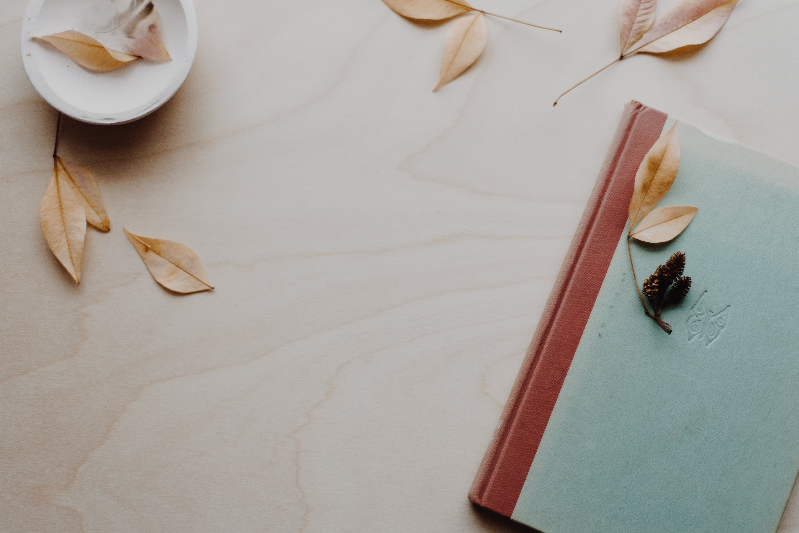

<ion-header [translucent]="true" style="background-color: rgb(221, 155, 67);">
  <ion-toolbar>
    <ion-buttons slot="start">
      <ion-menu-button style="color: green;"></ion-menu-button>
    </ion-buttons>
    <ion-title>E-Education</ion-title>
  </ion-toolbar>
</ion-header>

<ion-content [fullscreen]="true" style="margin-bottom: 0; padding: 0;">
  <ion-slides pager="true" [options]="slideOpts">
    <ion-slide>
      
    </ion-slide>
    <ion-slide>
      
    </ion-slide>
    <ion-slide>
      
    </ion-slide>
  </ion-slides>
</ion-content>

<ion-content [fullscreen]="true" style="margin-top: 0; padding-top: 0;">
  <ion-card>
    <ion-card-header>
      <ion-card-subtitle>Card Subtitle</ion-card-subtitle>
      <ion-card-title>Card Title</ion-card-title>
    </ion-card-header>
  
    <ion-card-content>
      Keep close to Nature's heart... and break clear away, once in awhile,
      and climb a mountain or spend a week in the woods. Wash your spirit clean.
    </ion-card-content>
  </ion-card>
</ion-content>
